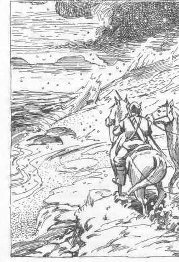

彩虹谷 · Rainbow Vale

几乎可以确定，覆盖奥里克大陆最北端的黑色冰原是由魔法制造并维持的，尘海也大概如此。简单来说，迎接北行者的黑冰高墙不应当长久存在。即使是普通的雪和冰，在这样的纬度也不会整个夏季留在陆地上；冰海每年春天解冻就是清楚的例子。更重要的是，深色冰尤其容易受到影响，因为它会吸收热量。北方城市的商人通常会把灰烬撒在门阶上，使冰融化；即使在微弱的冬日阳光下，这一策略也很有效。既然这个地区具有魔法性质，从那里传出奇异故事也就不足为奇。其中比较奇怪、但也更可靠的一个故事，就是彩虹谷，即里戈德鲁克。
几年前，人们从黑沼城堡找到一份残缺文献，使广为流传的“黑冰之外、太阳永不落下的土地”传闻有了依据。羊皮纸没有明确描述那片土地本身，却给出了在黑冰荒地中找到它的详细方向。一个名叫索尔莫德的佩伦兰商人兼冒险者当时正在埃鲁-托瓦尔访问；羊皮纸在当地集市上出现并被出售，随后落入他的手中。浪漫而富有冒险精神的索尔莫德一筹集到足够资助，便立即组织远征，并于 CY 453 年的丰收节从丹特雷顿出发。
CY 460 年，灰鹰城出现了一本书，据称是这次远征的魔法师亨里基·阿丹德的私人日记。无论真假，这都是一个极其奇妙的故事。亨里基讲述了穿越煤烟覆盖的冰原时所遭遇的困难：远征队受到地下温泉的威胁，这些温泉与黑沼城下方的温泉属于同一类型。它们显然削弱了冰层，使跨越冰面成为危险行动，可能突然塌陷，因为洞穴在旅行者重量下崩落。有些地方还有小型火山，它们把新落在冰上的雪染黑。此外还有某些“冰虫”（最可能是雷默哈兹）以及当地敌对的黑毛熊地精。由于这些危险和坍塌冰层形成的杂乱区域，远征进展非常缓慢，几名成员丧生，另一些人拒绝继续前进。
最终，他们抵达了一排刚刚从冰面上露出的低矮山峰，方向与文献所述相符。另一边的景象起初一定让幸存者以为自己进入了天堂。亨里基把它称作彩虹谷。
穿过一片雾区后，探险者看见一片绿色肥沃的盆地，中央上方半英里处漂浮着一个像太阳一样的天体，为土地提供温暖和光线。周围还漂浮着几座大型陆地岛屿；其中一些足够大，可以容纳小河，瀑布从岛屿边缘落下，因此亨里基便这样命名了山谷。在微型太阳下方，是一座中央湖泊；湖边可以看见几簇破碎的红色高塔。
索尔莫德和他的队伍沿陡峭悬崖下降进入山谷森林，先经过桦树、冷杉和紫檀林，再进入橡树与山毛榉林地。他们在那里停下来采集乌斯克果和亚皮克坚果，随后经过木兰与无花果树，来到湖岸；那里棕榈树和德克洛树在湿热中茂盛生长。可以看见蒸汽从山谷照明体下方的湖区升起。
他们在靠近从山谷边缘见过的废墟、某座天空瀑布旁边扎营；令他们惊讶的是，建筑由严重锈蚀的铁制成。最后，他们搭好营地。或许是长途跋涉后筋疲力尽，或许是因为不习惯炎热，守夜人睡着了。
索尔莫德的队伍既不特别虚弱，也没有装备不足，但在没有预警的情况下，他们几乎不可能抵挡突然袭来的攻击：哥布林、熊地精和巨型蜘蛛，其中有些蜘蛛体型惊人、速度极快，而且拥有恶魔般的智慧。营地被冲散，索尔莫德、亨里基和其他幸存者惊恐地看着同伴被捆起来，用蜘蛛丝绳索拖上最近的漂浮岛。
亨里基和其他人设法重新集合，并谨慎地探索周围环境数周。他们发现了一群原始人类；这些人显然崇拜蜘蛛及其类人生物爪牙。他们还在废墟中发现了许多无法解释的金属和玻璃构造。没有装备，他们不愿冒险横穿陆地，但从一名友好的穴居人那里得知，有一条向南的隧道最终通往地表。
有了逃生路线的保证，他们使用亨里基剩余的力量，对同伴被带去的天空岛发动袭击。他们没有发现同伴的踪迹，却在蜘蛛村旁的树林中发现了几尊非常巨大的蜘蛛雕像；每尊雕像都镶嵌着巨大的钻石眼睛。他们带走雕像上的钻石，然后逃走。
穿过隧道向南的漫长旅程又夺走了队伍中更多成员的生命；有些人在经过温泉时因中暑死亡。不过，他们最终在弗勒河的源头、黑冰以南走出地面。从那里，他们穿过布尔内阿尔森林；索尔莫德在与森林部落发生争执时，被一支毒箭射杀。幸存者包括来自施瓦岑布伦的法兰汉神职人员亨里基，以及两名狼族游牧民；他们把财宝分掉，然后各自离散，再也没人愿意冒险回到黑冰之外那片土地的恐怖环境中。
地下城主注记
山谷的主要居民是哥布林、熊地精、各种巨型蜘蛛以及前文所述的穴居人。拥有《东方冒险》规则的地下城主可以加入半妖和哥布林蜘蛛。几乎任何气候带的生物都可以加入名单。整个山谷盛产钻石；蜘蛛及其盟友还拥有许多从废墟中打捞出的魔法物品。
关于如何抵达该地区，知识来源可以是远征幸存者或他们的后代。至少在最初几次冒险中，不必解释山谷的起源。没有长时间搜索，很难找到弗勒河源头的通道；没有方向指引，可能根本无法找到。它位于地图六边形 Y4-56。里戈德鲁克是穴居人对它的称呼，也是旧方向资料中使用的名称，位于 W4-51。